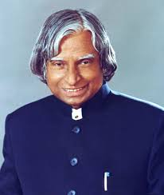

Information

The Missile Man of India
Biography
Dr. A.P.J. Abdul Kalam - The Missile Man of India Dr. Avul Pakir Jainulabdeen Abdul Kalam (1931–2015) was a renowned Indian aerospace scientist and the 11th President of India, serving from 2002 to 2007. Widely known as the "Missile Man of India" for his work on the development of ballistic missile and launch vehicle technology, he played a pivotal role in India’s space and defense programs. Born in Rameswaram, Tamil Nadu, Dr. Kalam came from humble beginnings. His dedication to education and science led him to work with organizations like ISRO and DRDO, where he contributed to major projects like the SLV-III and Agni missiles. He was also closely involved in India's 1998 nuclear tests at Pokhran. Apart from being a brilliant scientist, Dr. Kalam was a beloved teacher and a passionate advocate for youth empowerment and education. His humility, simplicity, and vision continue to inspire millions across the world. He passed away on July 27, 2015, while delivering a lecture at IIM Shillong, leaving behind a legacy of knowledge, service, and inspiration.